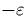
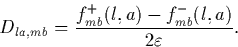

An important piece of information that can be extracted from these calculations and compared directly to experiment is the local vibrational modes of the defect. These are vibrations characteristic of the defect core that do not resonate with bulk modes and so remain localised at the defect site. Since these are directly dependent on the masses of the atoms involved, the influence of different isotope substitutions on these modes is an invaluable probe of the defect structure and content. These are primarily detected using Fourier Transform Infrared Spectroscopy (FTIR) through observation of IR absorption at different wavelengths, however they can also be measured as phonon sidebands to PL absorption and Raman Spectroscopy for the Raman active modes.
The vibrational modes of a cluster can be determined from the energetic double derivatives with respect to displacement of the atoms. Initially the cluster is fully relaxed until all atomic forces are zero. A given atom a is displaced along axis l by a distance (usually chosen to be 0.025 a.u.), and the self-consistent charge density recalculated. The forces on the atoms are then no longer zero, so for example, atom b along axis direction m will feel a force of fmb+(l,a). If this is repeated with a displacement of  then a new force fmb-(l,a) is determined. Given these three points it is possible to now calculate the energy second derivatives up to second order in :

Once the full dynamical matrix is determined it can be diagonalised, scaled by the root of the relevant atomic masses, to give as eigenvalues the vibrational modes of the system. Note that this method includes some contribution from all even powers of and not just the quadratic term since the step size is not infinitesimal, and thus there will also be some anharmonic contribution included. These frequencies are thus sometimes referred to as quasi-harmonic, and this is discussed in more detail in Reference [37]. Surface H atoms are given a large enough mass (1000H) that they are effectively fixed.
To calculate the double derivatives for every atom in the cluster would be too time consuming. Since most of the cluster atoms approximate to bulk and only act to perturb the localised vibrational modes, the derivatives are only calculated for the core defect atoms. The rest of the bulk material is included using a Musgrave-Pople valence force potential, discussed further in Section 2.8.2.